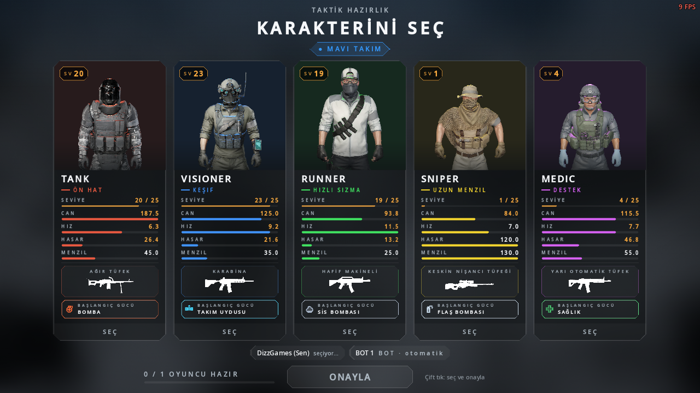

ÇOK YAKINDA
PC · WINDOWS
LAN / ONLINE
TacticalDark
Dinamik el feneri aydınlatması ve derin karanlık üzerine kurulu askeri gerilim nişancısı. Her maç değişen kart ve kapı konumlarıyla her köşe yeni bir risk.